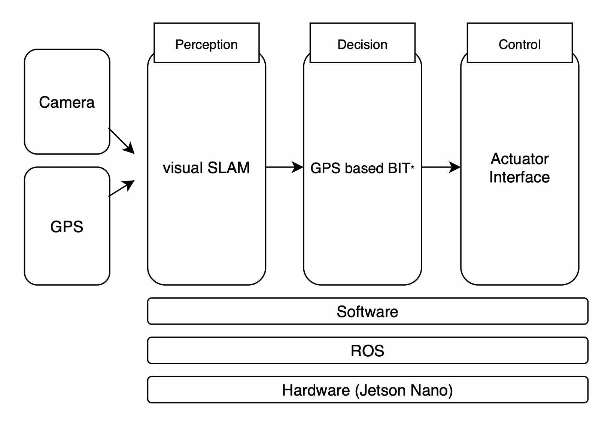
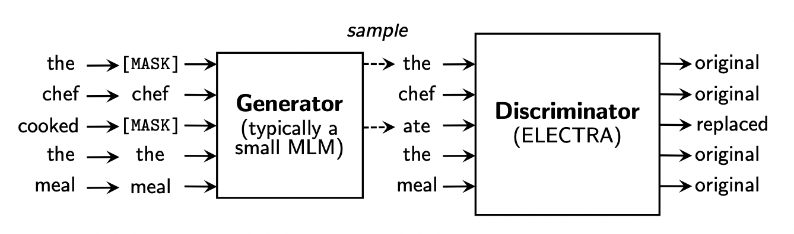

Purdue University, West Lafayette, IN, USA
Visiting Scholar; Advisor: Eric T. Matson (Apr 2022 - Aug 2022)
IT Audit Specialist, Internship (2022)

Big Data, AI education Fellowship - 160 hours, Seoul Business Agency (2020 – 2021)
Software-Membership Fellowship, Kyung Hee University, Software college (2021)
Public Data Analysis Certificate, National IT Industry Promotion Agency (2021)
Advanced Data Analytics Semi-Professional Certificate, Ministry of Science and ICT (2022)
Teaching Assistant, Statistics of Big Data - Fall 2021
Bachelor of Science in Software Convergence (Data Science)
Bachelor of Economics
Operating System: Linux, ROS2
ML & Data Analysis: Sci-kit learn, Pytorch, Keras
Tools & Software: Nvidia Jetson, SLAM
Police Officer, (2018 - 2020)
Visiting Scholar; Advisor: Eric T. Matson (Apr 2022 - Aug 2022)
- Developed 'Outdoor Simultaneous Localization and Mapping (SLAM) and Path Planning algorithm for mobile robot'
in the ROS2 and Ubuntu 18.04 environment at Jetson Nano computer. [code] [paper] will be uploaded soon. - Collected video and GPS sensor data, and preprocessed in the form of matrix by 'openCV.'
- Embodied Covisibility Graph and optimized the cost function using Levenberg–Marquardt algorithm of ‘g2o’ library.
- Built the algorithm using 20 classes in ‘C++,’ and Implemented Object-Oriented Programming (OOP) and Polymorphism.
|  |
Related Professional
PricewaterhouseCoopers (PwC) SAMIL, Seoul, Republic of KoreaIT Audit Specialist, Internship (2022)
- Audited the financial statements of 60 companies, using SQL, Excel and VBA.
- Learned the data analysis cooperation with our team as well the client company.
- Developed the code for automation of encoding and preprocessing data.
Fellowships and Honors
Mirae Asset Financial Group Big Data Hackaton, 4th place (2021)- Conducted Stock Investment Opinion Sentimental Analysis, which distinguished the tendency is whether positive or not.
- Collected text data from Youtube videos, Youtube comments, News, and Bank Reports.
- Fine-tuned Google's ELECTRA model using Pytorch, which is a GAN based model.
- Gave a presentation on behalf of our team and finally achieved 4th place out of 1,000. [video] [code]
|  |

|
Big Data, AI education Fellowship - 160 hours, Seoul Business Agency (2020 – 2021)
- Developed Job Recommendation System based on Naturual Language Processing (NLP) and machine learning, using
‘Scikit-learn’ and ‘KoNLPy’ libaray. - Collected language data through crawling by ‘Selenium’ library, and preprocessed them. [code]
Software-Membership Fellowship, Kyung Hee University, Software college (2021)
Public Data Analysis Certificate, National IT Industry Promotion Agency (2021)
Advanced Data Analytics Semi-Professional Certificate, Ministry of Science and ICT (2022)
Teaching and Mentoring
Kyung Hee University, Seoul, Republic of KoreaTeaching Assistant, Statistics of Big Data - Fall 2021
- Set the development environment of Python3, Installed and Adjusted the packages.
- Utilized API for collecting map data.
Education
Kyung Hee University, Seoul, Republic of Korea (2023)Bachelor of Science in Software Convergence (Data Science)
Bachelor of Economics
Skills
Programming Language: Python3, C++, R, VBAOperating System: Linux, ROS2
ML & Data Analysis: Sci-kit learn, Pytorch, Keras
Tools & Software: Nvidia Jetson, SLAM
Extracurricular Experience
Financial Engineering Club, Seoul, Republic of Korea (2021 - 2022)- Researched interest rate model, hedging, and financial derivative products.
- Solved math problems and discussed about the effects of macro-economic factors.
- Implemented the derivative pricing model in Python3 and C++.
- Studied Wilmott, P., 2013. Paul Wilmott on quantitative finance. John Wiley & Sons.
- Studied Hull, J.C., 2018. Options, Futures and Other Derivatives, 10e. Aufl., New York.
Volunteer
National Police Agency, Seoul, Republic of KoreaPolice Officer, (2018 - 2020)
- Controlled the traffic for Seoul citizens and guarded the car of a president.
Talk
SW Accomplished Student Talk Concert, Ministry of Science and ICT, Republic of Korea (2021)- Articulated my career goal to become a Data Scientist in the finance domain. [video]
- Shared the mind-set and methods to study Data Science to the students who are not from STEM field.